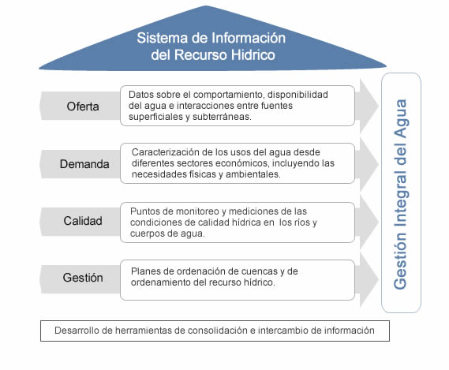

Componentes
El IDEAM en atención a los lineamientos del MADS, ha planteado el SIRH como una Plataforma de servicios que funciona en coordinación con las Autoridades ambientales como socios que aportan información teniendo en cuenta los requerimientos nacionales de información para analizar ls demnada, oferta, calidad, riesgo y gestión del agua. Para ello se han diseñado herramientas que sirven para realizar la consolidación de información sobre las condiciones y comportamiento del agua en las diferentes regiones del país.

|
| Instrumentos disponibles: |
| El SIRH cuenta con herramientas que integran funcionalidades para la captura y consulta de atributos minimos de información que deben ser gestionados por las Autoridades ambientales como resultado de sus procesos de gestión del agua en su respectiva jurisdicción. Estas incluyen: |
| Inventario de fuentes hídircas: atendiendo al conocimiento que tiene cada Autoridad ambiental sobre los recursos hidricos de su jurisdicción, el sistema requiere establecer un inventario de cuerpos de agua sobre los cuales se hace monitoreo a las condiciones de calidad y demanda. |
| Inventario de usuarios del agua: una vez identificado el cuerpo de agua, la Autoridad ambiental debe vincular los usuarios del agua entendidos como aquellas personas naturales o juridicas que han gestionado permisos de aprovechamiento o de vertimiento. |
|
| Gestión de puntos de monitoreo: de forma complementaria debe reportarse la información de los Puntos de monitoreo que hacen parte de las Redes nacionales de calidad del agua. |
Instrumentos de registro y consulta de Planes de Ordenamiento del Recurso hidrico, PORH, y Planes de Ordenamiento y Manejo de Cuencas, POMCAS: busca consolidar los documentos de planificación del recurso hídrico, incluyendo las estrategias de seguimiento de la disponibilidad del recurso hídrico, bajo el contexto del comportamiento de calidad y cantidad de las corrientes de agua y sus áreas de influencia |
|
|